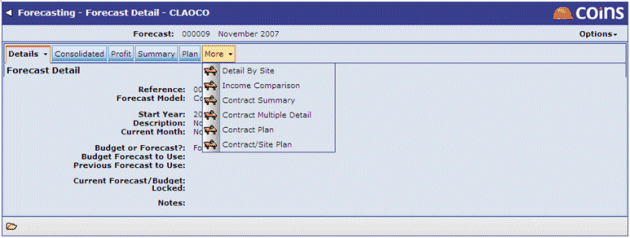

The More tab allows you to select the minor forecast views you wish to look at. The number and scope of the options within this menu is, therefore, entirely dependent on the forecast model configuration underlying the forecast being viewed.
In the example below, six non-key views have been configured:

Set up additional views using the Views tab in Forecast Models. Do not